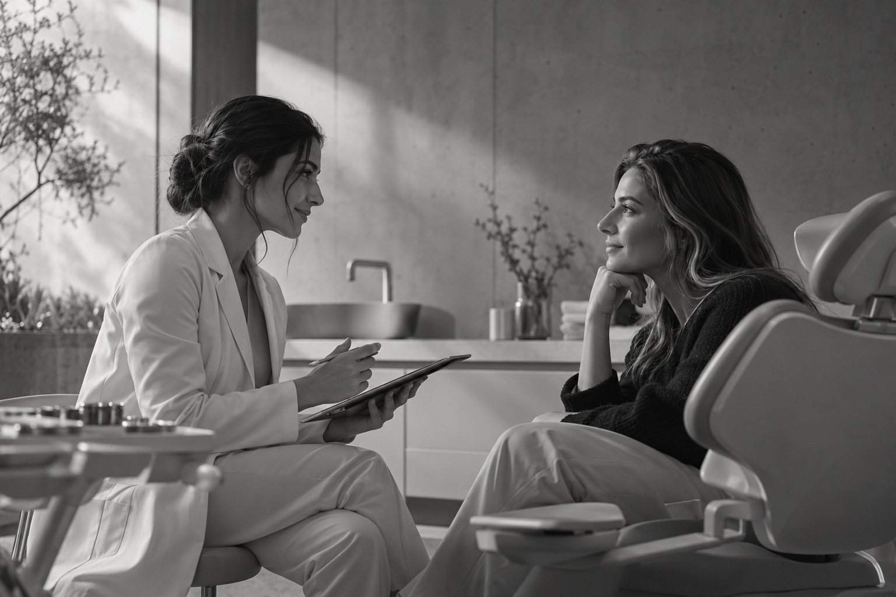
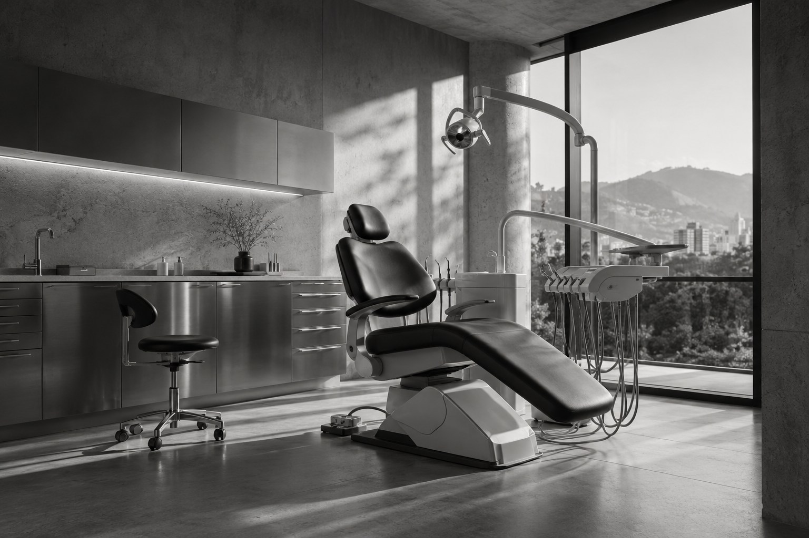
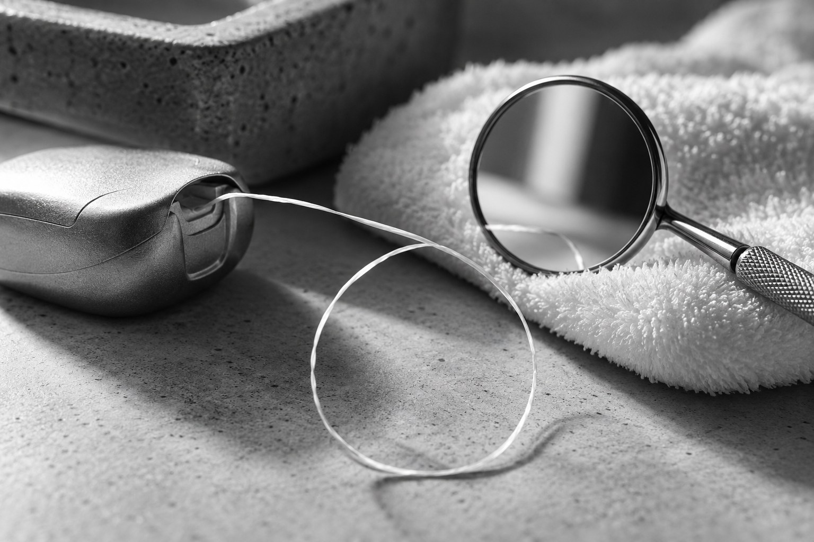
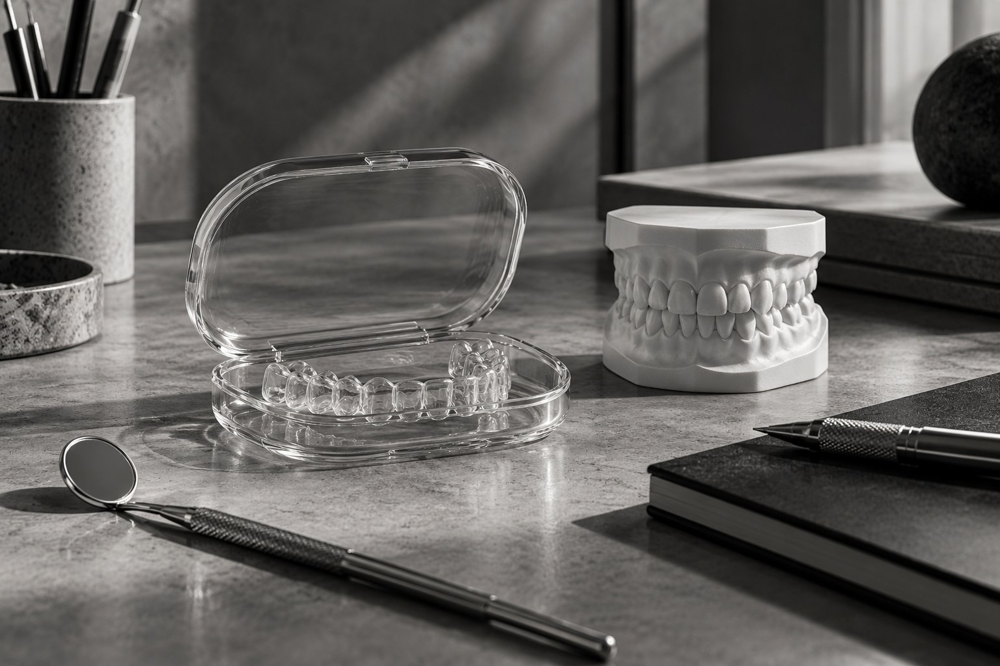
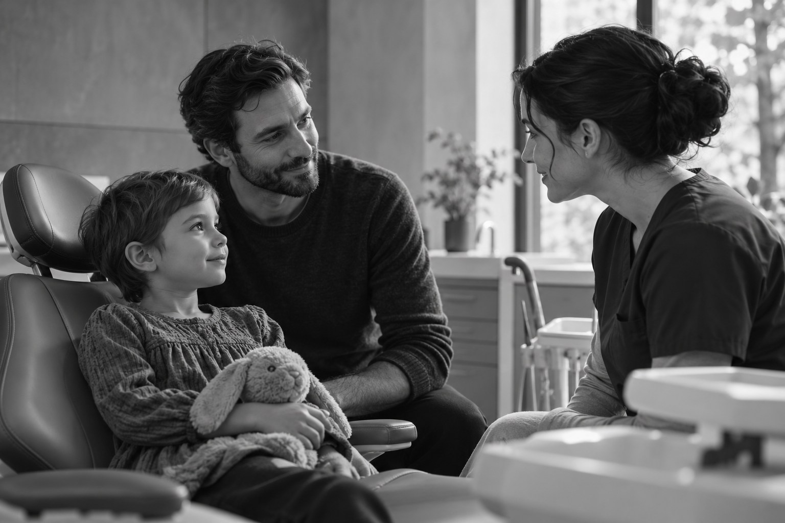

01 / Área de cuidado
Prevenção e rotina
Rotina, avaliação e acompanhamento da saúde bucal.
Explorar o cuidadoUm olhar para cada pessoa.
Forma Odontologia. Conhecer a pessoa antes de planejar o cuidado. Uma conversa, diferentes possibilidades.
Primeira visita


Conhecer é o primeiro passo. A indicação de cuidados depende de avaliação profissional.
01 / Área de cuidado
Rotina, avaliação e acompanhamento da saúde bucal.
Explorar o cuidado
02 / Área de cuidado
Alinhamento e função compreendidos a partir de cada pessoa.
Explorar o cuidado
03 / Área de cuidado
Primeiras descobertas, adaptação e participação da família.
Explorar o cuidadoO estúdio
A história de cada pessoa faz parte do encontro. Conheça o espaço, reúna suas dúvidas e entenda os próximos passos antes de decidir.
Conheça o estúdioA proposta demonstrada começa com uma conversa sobre o que você procura, seguida da avaliação e da explicação dos próximos passos. O protocolo real deve ser confirmado com a clínica.
Continuar neste assuntoVocê pode começar descrevendo sua dúvida. A avaliação profissional ajuda a organizar as possibilidades; não é necessário escolher um tratamento pelo site.
Continuar neste assuntoA equipe da clínica deverá informar valores, formas de pagamento e condições antes da contratação. Este catálogo não apresenta preços fictícios.
Continuar neste assunto